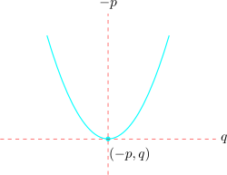

8.4 Area under a curve
The definite integral has a picture attached to it: it measures the area between a curve and the \(x\)-axis.
8.4.1 Area above the \(x\)-axis
Definition 8.16. The area enclosed by the curve \(y=f(x)\), the \(x\)-axis and the lines \(x=a\) and \(x=b\), where the curve lies above the axis, is \[A=\int _a^b y\,dx.\]
Example 8.17. Find the area of the region bounded by the curve \(y=(5-x)(x+1)\) and the positive \(x\)- and \(y\)-axes.
Solution. Step 1 — find the limits. The region is bounded on the left by the \(y\)-axis, so \(a=0\). On the right it is bounded where the curve meets the \(x\)-axis: \[(5-x)(x+1)=0\quad \implies \quad x=5\ \text { or }\ x=-1.\] Only \(x=5\) is on the positive axis, so \(b=5\).
Step 2 — expand and integrate. \[(5-x)(x+1)=5x+5-x^2-x=5+4x-x^2.\] \[A=\int _0^5\left (5+4x-x^2\right )dx=\left [5x+2x^2-\frac {x^3}{3}\right ]_0^5.\]
Step 3 — substitute the limits. At \(x=0\) every term vanishes, so only the upper limit contributes: \[A=\left (25+50-\frac {125}{3}\right )-0=75-\frac {125}{3}=\frac {225-125}{3}=\frac {100}{3}.\]
\[\therefore \quad A=\frac {100}{3}=33\tfrac {1}{3}\ \text {square units}.\]
Note 8.18. Always expand the brackets before integrating. There is no rule that integrates a product directly, and \(\int (5-x)(x+1)\,dx\) is not the product of the two separate integrals.
8.4.2 Area below the \(x\)-axis
Where the curve dips below the axis, \(y\) is negative, so the integral comes out negative. An area cannot be negative, so a minus sign is placed in front.
Definition 8.19. If the curve lies below the \(x\)-axis between \(x=a\) and \(x=b\), the area is \[A=-\int _a^b y\,dx.\]
Solution. Step 1 — find the limits. \[x(x-4)=0\quad \implies \quad x=0\ \text { or }\ x=4.\] Between these two roots the parabola is below the axis — at \(x=2\), for instance, \(y=2(-2)=-4\).
Step 2 — integrate. \[\int _0^4\left (x^2-4x\right )dx=\left [\frac {x^3}{3}-2x^2\right ]_0^4 =\left (\frac {64}{3}-32\right )-0=\frac {64-96}{3}=-\frac {32}{3}.\]
Step 3 — take the area as positive. \[A=-\left (-\frac {32}{3}\right )=\frac {32}{3}=10\tfrac {2}{3}\ \text {square units}.\]
Note 8.21. The negative answer is not a mistake to be hidden. It is the integral correctly reporting that the region sits below the axis. Reversing the sign at the end converts that signed result into an area.
8.4.3 Regions that cross the axis
Great care is needed when a region lies partly above and partly below the axis. The two parts have integrals of opposite sign, and adding them makes them cancel — which is not what an area should do.
Example 8.22. Sketch the curve \(y=x(x-2)(x+2)\) and find the total area of the region bounded by the curve and the \(x\)-axis.
Solution. Step 1 — sketch. The roots are \(x=-2\), \(x=0\) and \(x=2\). Testing a point in each interval: at \(x=-1\), \(y=(-1)(-3)(1)=3\), above the axis; at \(x=1\), \(y=(1)(-1)(3)=-3\), below.
Step 2 — expand. \[x(x-2)(x+2)=x\left (x^2-4\right )=x^3-4x.\]
Step 3 — integrate each part separately. For the left lobe, from \(-2\) to \(0\): \[\int _{-2}^{0}\left (x^3-4x\right )dx=\left [\frac {x^4}{4}-2x^2\right ]_{-2}^{0} =0-\left (\frac {16}{4}-8\right )=0-(4-8)=4.\] For the right lobe, from \(0\) to \(2\): \[\int _{0}^{2}\left (x^3-4x\right )dx=\left [\frac {x^4}{4}-2x^2\right ]_{0}^{2} =(4-8)-0=-4.\]
Step 4 — add the sizes, ignoring signs. \[A=A_1+A_2=4+|-4|=8\ \text {square units}.\]
Note 8.23. Integrating straight through in one go would give \[\int _{-2}^{2}\left (x^3-4x\right )dx=\left [\frac {x^4}{4}-2x^2\right ]_{-2}^{2} =(4-8)-(4-8)=0,\] an answer of zero for a region that plainly has area. The two lobes are equal in size and opposite in sign, so they cancel exactly. This is why the roots must be found first and the integral split at every point where the curve crosses the axis.
8.4.4 Area between a curve and a line
Definition 8.24. If \(y_1=f(x)\) lies above \(y_2=g(x)\) between \(x=a\) and \(x=b\), the area enclosed between them is \[A=\int _a^b\left (y_1-y_2\right )dx.\]
Example 8.25. Sketch the curve \(y=x(6-x)\) and the line \(y=2x\), and find the area of the region enclosed between them.
Solution. Step 1 — find where they meet. Set the two expressions equal: \[6x-x^2=2x\quad \implies \quad 4x-x^2=0\quad \implies \quad x(4-x)=0,\] so they meet at \(x=0\) and \(x=4\). These are the limits of integration.

Step 2 — decide which is on top. Between the meeting points, test \(x=2\): \[\text {curve: } 2(4)=8,\qquad \text {line: } 2(2)=4.\] The curve is above, so \(y_1=6x-x^2\) and \(y_2=2x\).
Step 3 — integrate the difference. \[A=\int _0^4\left [\left (6x-x^2\right )-2x\right ]dx=\int _0^4\left (4x-x^2\right )dx =\left [2x^2-\frac {x^3}{3}\right ]_0^4\] \[=\left (32-\frac {64}{3}\right )-0=\frac {96-64}{3}=\frac {32}{3}.\]
\[\therefore \quad A=\frac {32}{3}=10\tfrac {2}{3}\ \text {square units}.\]
Note 8.26. Subtracting in the wrong order gives \(-\frac {32}{3}\). The test at Step 2 exists to settle the order before integrating; a negative answer at the end is the signal that it was done the other way round.
Note 8.27. Notice that the “above minus below” rule handles regions below the axis automatically. No separate minus sign is needed here, because the subtraction already takes care of it.